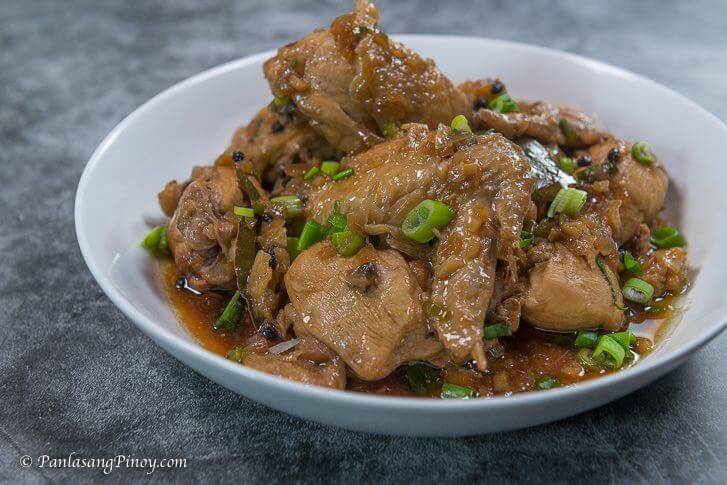

Adobong Manok sa Buko is a delicious Filipino dish that combines the rich flavors of chicken adobo with the refreshing taste of coconut. This unique twist on the classic adobo recipe is made by cooking chicken in a mixture of soy sauce, vinegar, garlic, and other spices, along with the addition of coconut water and coconut meat from a young coconut (buko).
The result is a savory and slightly sweet dish that is perfect for any occasion. The tender chicken absorbs the flavors of the marinade, while the coconut adds a delightful creaminess to the sauce. Adobong Manok sa Buko is often served with steamed rice, making it a satisfying and comforting meal that is loved by many.
Enjoy your delicious Adobong Manok sa Buko!